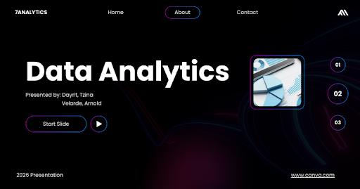
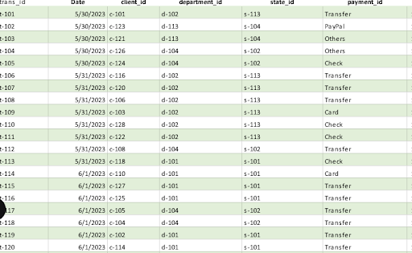
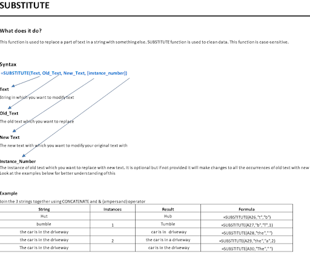
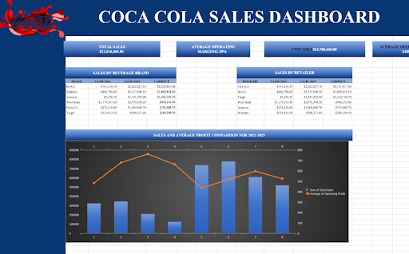
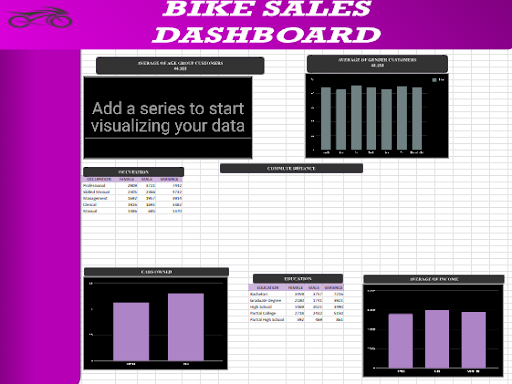
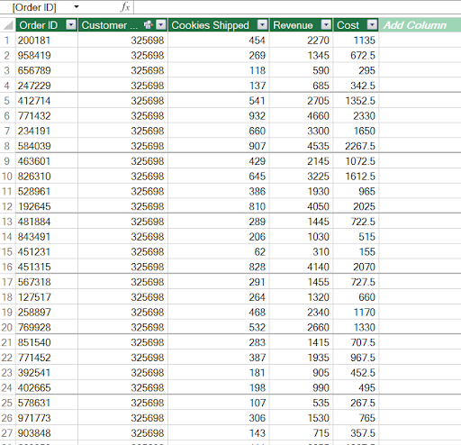
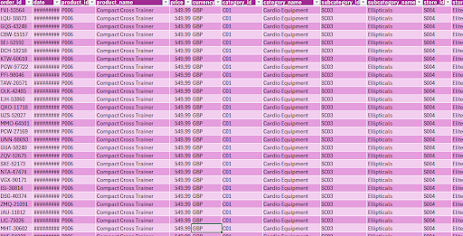

Excel Projects

Asking the Right Questions
January 2026
Asking the right questions ensures data analysis is meaningful and solves the intended problem.
View File
Demo File for Data Preparation and Cleaning
February 2026
Demo File for Data Cleaning: An example dataset used to practice fixing errors and organizing data.
View File
Data Cleaning and Preparation
February 2026
Making raw data accurate, consistent, and ready for analysis.
View File
Pivot Tables and Charts in Excel
February 2026
Tools in Excel to summarize and visualize data quickly.
View File
MS Excel Functions
February 2026
Excel functions are built-in formulas to calculate and analyze data efficiently.
View File
Demo Creating Dashboards in Excel
February 2026
A demo dashboard in Excel shows how to visualize and summarize data for quick insights.
View File
Data Visuals and Analysis
February 2026
Data Visuals and Analysis is using visual tools to explore, understand, and interpret data.
View File
Power Query Demo
March 2026
A practical example of importing, transforming, and preparing data using Power Query.
View File
Normalization using Power Query
March 2026
Power Query normalization: cleaning and standardizing data so it’s consistent and ready for analysis.
View File